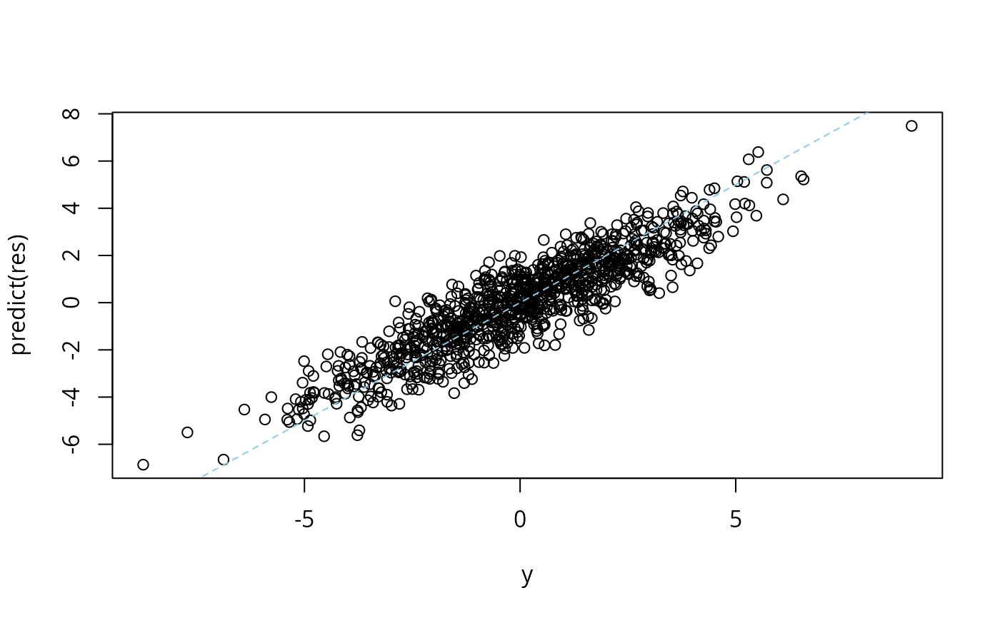
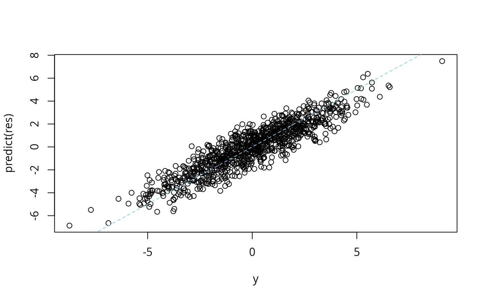

susie_auto is an attempt to automate reliable
running of susie even on hard problems. It implements a three-stage
strategy for each L: first, fit susie with very small residual
error; next, estimate residual error; finally, estimate the prior
variance. If the last step estimates some prior variances to be
zero, stop. Otherwise, double L, and repeat. Initial runs are
performed with relaxed tolerance; the final run is performed using
the default susie tolerance.
susie_auto(
X,
y,
L_init = 1,
L_max = 512,
verbose = FALSE,
init_tol = 1,
standardize = TRUE,
intercept = TRUE,
max_iter = 100,
tol = 0.01,
...
)Arguments
- X
An n by p matrix of covariates.
- y
The observed responses, a vector of length n.
- L_init
The initial value of L.
- L_max
The largest value of L to consider.
- verbose
If
verbose = TRUE, the algorithm's progress, and a summary of the optimization settings, are printed to the console.- init_tol
The tolerance to passed to
susieduring early runs (set large to shorten the initial runs).- standardize
If
standardize = TRUE, standardize the columns of X to unit variance prior to fitting. Note thatscaled_prior_variancespecifies the prior on the coefficients of X after standardization (if it is performed). If you do not standardize, you may need to think more carefully about specifyingscaled_prior_variance. Whatever your choice, the coefficients returned bycoefare given forXon the original input scale. Any column ofXthat has zero variance is not standardized.- intercept
If
intercept = TRUE, the intercept is fitted; itintercept = FALSE, the intercept is set to zero. Settingintercept = FALSEis generally not recommended.- max_iter
Maximum number of IBSS iterations to perform.
- tol
A small, non-negative number specifying the convergence tolerance for the IBSS fitting procedure. The fitting procedure will halt when the difference in the variational lower bound, or “ELBO” (the objective function to be maximized), is less than
tol.- ...
Additional arguments passed to
susie.
Value
See susie for a description of return values.
See also
Examples
set.seed(1)
n = 1000
p = 1000
beta = rep(0,p)
beta[1:4] = 1
X = matrix(rnorm(n*p),nrow = n,ncol = p)
X = scale(X,center = TRUE,scale = TRUE)
y = drop(X %*% beta + rnorm(n))
res = susie_auto(X,y)
plot(beta,coef(res)[-1])
abline(a = 0,b = 1,col = "skyblue",lty = "dashed")
 plot(y,predict(res))
abline(a = 0,b = 1,col = "skyblue",lty = "dashed")

plot(y,predict(res))
abline(a = 0,b = 1,col = "skyblue",lty = "dashed")
